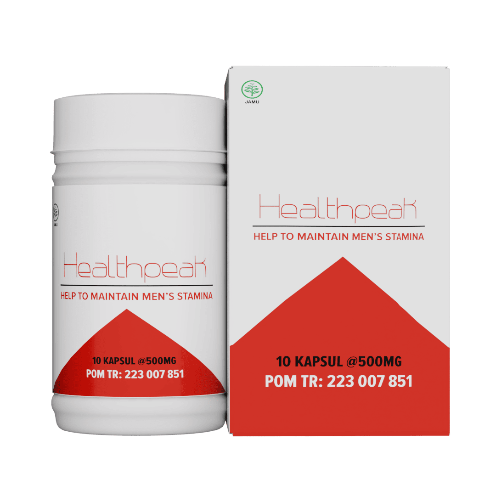

Spesialis urologi di Ibu kota.
Keputusan cerdas dalam pengobatan PROSTATITIS

- Meredakan rasa sakit yang tajam dan menusuk
- Meredakan gejala prostatitis
- Meningkatkan potensi
- Bekerja dengan cepat
- Mengembalikan kendali atas buang air kecil
Penjualan produk!
PROMOSI BERAKHIR PADA
00
05
00
Harga spesial
Rp. 1.300.000Rp. 390.000